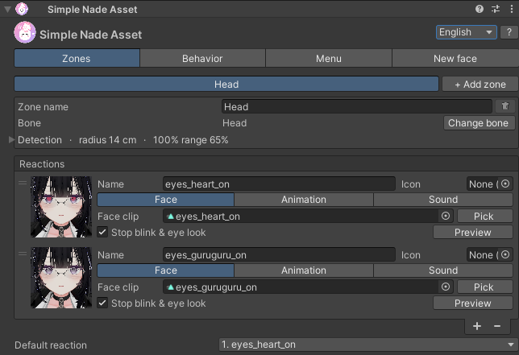
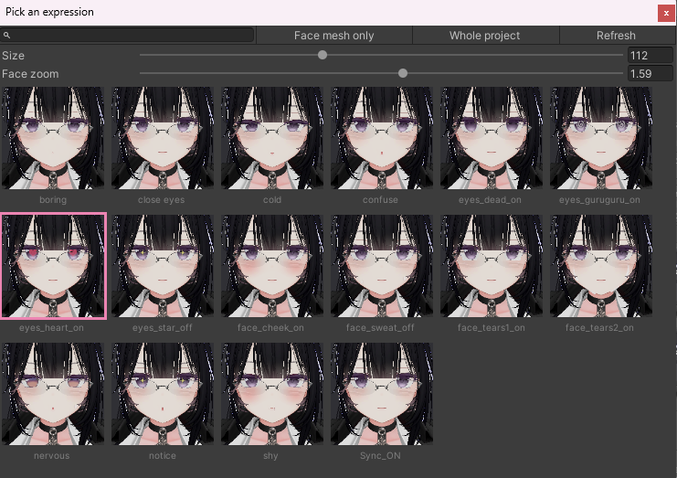
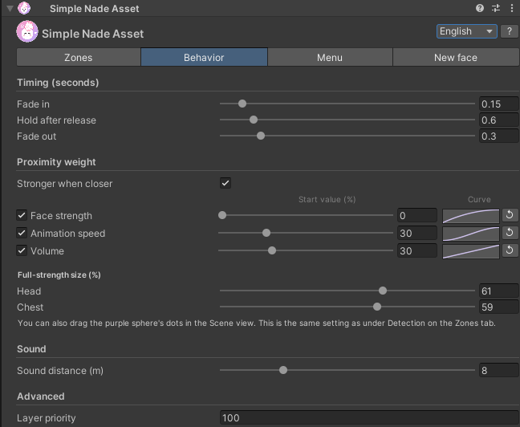
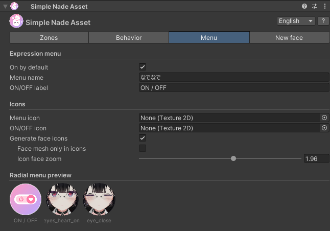
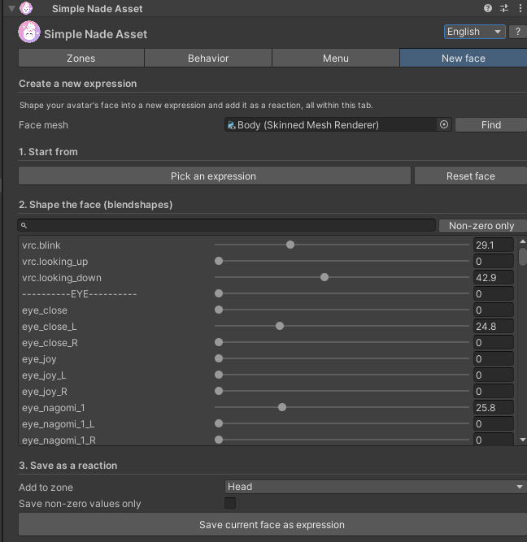

A Modular Avatar gimmick that changes your face when someone pats you. Drop the prefab into your avatar, pick a reaction and upload.
Version1.1.0
Unity2022.3
VRChat SDKAvatars 3.10 or later
Modular Avatar1.18 or later (NDMF 1.14 or later)
AvatarHumanoid
Install
Add Modular Avatar to your project with VCC (or ALCOM).
Import Simple_Nade_Asset.unitypackage into Unity. It adds the Assets/Eukkbi_Soft/Simple_Nade_Asset folder.
Drag Simple_Nade_Asset.prefab into your avatar in the Hierarchy. You can also right-click the avatar and choose Simple Nade Asset > Add to Avatar.
A "Head" zone is already set up. Pick a face for its reaction and upload.
No Setup Outfit needed.Contacts, the FX layer, the menu and parameters are generated when you upload.
Inspector
Settings are split into four tabs.
Tab
What it does
Zones
Where you can be patted, and the reactions for each zone (face, animation, sound)
Behavior
Timing, proximity weight and sound distance
Menu
Expression menu names and icons
New face
Make a new expression from your avatar's face
Switch the language (日本語 / 한국어 / English) at the top right. Press ? to show an explanation for each setting; hovering a setting shows one too.

The Zones tab
Zones
The buttons at the top list your zones. + Add zone adds one on a bone you pick (up to 7). Humanoid bones come first; "Other bones" at the bottom has ear, tail, hair and outfit bones, searchable by name.
The bin next to the zone name removes it; Change bone picks another bone.
Open Detection to adjust the sphere, shown pink in the Scene view. Move the selected zone's sphere with the arrows and resize it with the dots on its edge. Radius (m) and Offset (m) are at avatar scale 1.
Detect fingers too: fingertips count as well as palms.
Detect my own hands: your own hands trigger it too, handy for testing alone.
Scene view: one pink sphere per zone
Sphere sizeHeads differ between avatars, so always fit the sphere to yours. For a head, cover the hair as well.
Reactions
Turn on only what each reaction needs: Face, Animation and Sound.
Face: set an expression clip, or click the thumbnail (or Pick) to choose while seeing the face. Preview shows it on the avatar in the Scene. Stop blink & eye look pauses blinking and eye tracking during the reaction so they don't fight closed-eye faces.
Animation: plays in the FX layer with the face (object toggles, particles, materials, bones such as ears and tails). Humanoid body motion doesn't play.
Sound: with several clips one is picked at random each time. Choose Once on touch or Loop while touched. People nearby hear it too.
With two or more reactions you can choose one in the in-game menu. The Default reaction is the one selected at first; pressing the selected button again in the menu goes back to it.

The picker: choose from thumbnails of your avatar's face
Behavior
Timing (seconds)
Setting
Default
What it is
Fade in
0.15
From the touch to the reaction's face
Hold after release
0.6
How long the reaction stays after the hand leaves
Fade out
0.3
Back to your usual face
Sound & advanced
Sound distance (m): 8 m by default.
Layer priority: 100 by default. Higher wins over gesture expressions and other face gimmicks. Usually leave it as is.
Proximity weight
Turn on Stronger when closer on the Behavior tab: the reaction starts weak when a hand touches the pink sphere and reaches 100% at the inner purple sphere. It never goes beyond your original face, speed and volume.
Item
Start value (default)
Inside the purple sphere
Face strength
0%
100%
Animation speed
30%
Normal speed
Volume
30%
Normal volume
Choose items: uncheck an item to keep it at 100% whatever the distance.
Simple: set the start value with the slider; it changes evenly in between.
Detailed: click the graph on the right to shape the change (horizontal: pink sphere → purple sphere, vertical: start value → 100%). ↺ resets it to a straight line.
Blend distance (cm): the distance from the pink sphere in to the purple one, set per zone (3 cm by default). Hands stop on top of the hair, so 2–4 cm suits head pats. You can also drag the purple sphere's dots in the Scene view.
Eyes switch at once: shapes that slide an image out of the eye, like heart eyes, are found automatically and switch at once at 50% face strength. Eyes closing, mouth and cheeks blend smoothly.
Hand starts to touchComing closerBeing patted

Proximity weight on the Behavior tabThe editor that opens when you click a graph
Starts at the outer pink sphere, 100% at the inner purple sphere
Menu
On by default: whether it starts switched on after upload. What you choose in-game is saved.
Menu name (なでなで by default) and ON/OFF label
Menu icon and ON/OFF icon: empty uses the bundled icons.
Generate face icons: on upload, each reaction's face is captured as its menu icon. Adjust it with Face mesh only in icons and Icon face zoom.
Radial menu preview: the first slot is the "なでなで" button in your avatar's menu, followed by the page it opens.
In-game, "なでなで" is added to your avatar's menu. It holds the overall ON/OFF and the reactions; with two or more zones, it holds one submenu per zone (that zone's ON/OFF and reactions). Choices are saved and synced.

The Menu tabThe in-game radial menu
New face
If your avatar has no expression you like, make a new one in this tab and add it as a reaction.
Choose a starting expression with Pick an expression (a window with face thumbnails opens), or start from scratch with Reset face.
Shape the face with the blendshape sliders. Search by name, or show only the shapes you moved with Non-zero only. Lip-sync shapes are hidden.
Choose Add to zone and press Save current face as expression. A clip is created in the Expressions folder and added as a reaction.
TipLeave Save non-zero values only off so gesture expressions don't mix in. When you're done, press Reset face to put the face back; Ctrl+Z works too.

The New face tab
Parameters
n is the zone number, from 0.
Name
Type
Sync
Bits
SimpleNade/On
Bool
Synced, saved
1
SimpleNade/n/On
Bool
Synced, saved (2+ zones)
1 / zone
SimpleNade/n/Face
Int
Synced, saved (zones with 2+ reactions)
8 / zone
SimpleNade/n/Touch
Bool
Local (computed on each client)
0
SimpleNade/n/Near
Float
Local (proximity weight only)
0
Example: head only, 3 reactions → 1 + 8 = 9 bits
FAQ
Patting doesn't change my face
Check that the pink sphere's position and size fit your avatar.
Check that ON/OFF is on in the menu.
To test with your own hand, turn on Detect my own hands.
Check that the reaction has a face clip.
The face only shows when the hand is very close
Lower Blend distance (cm) on the Behavior tab to 2–3 cm. Hands stop on top of the hair, so a long distance never reaches 100%. Raising the start value of Face strength, or shaping the graph to rise early, also helps.
Heart eyes look half way out of the eyes
Shapes that slide out of the eye switch at once at 50% face strength automatically. If it still bothers you, uncheck Face strength under proximity weight and the face stays at 100% whatever the distance.
Gesture expressions or other face gimmicks cover it
Raise Layer priority on the Behavior tab.
Blinking comes back during a reaction
After a reaction with Stop blink & eye look ends, eye tracking is handed back. If your avatar's gestures control eye tracking themselves, blinking may come back until you change gestures again.
Does it work with Write Defaults OFF?
Yes. It works with Write Defaults ON and OFF, and leaves your expressions and gestures alone while you're not touched.
I'm short on synced parameter memory
A zone with one reaction doesn't use Face, and a single zone doesn't use the per-zone On. Fewer zones or reactions use fewer bits.
Notes
Up to 7 zones, and up to 7 reactions per zone (a VRChat menu page holds 8 controls).
One per avatar.
Humanoid (body motion) animations don't play in the FX layer.
When two zones are touched at once, the one lower in the list wins.
The author is not responsible for any trouble caused by using this product.
Updates & contact
Version
Date
Changes
1.1.0
2026/11/01
Added proximity weight. Tabbed inspector. Improved New face tab (Pick an expression, blendshape sliders). Fixed the menu icon not showing in-game.